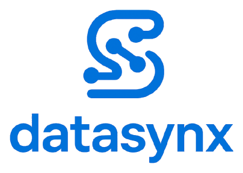

Datasynx Shadowing
The SOPs your team never has time to write — observed, generated, anonymized.
by Datasynx AI · ★ Star on GitHub
100% local MCP-native Claude-powered PII-anonymized
Shadowing observes daily workflows like a silent shadow — shell commands, active windows, git commits, file changes — and automatically generates structured Standard Operating Procedures (SOPs) via Claude. Everything stays on the employee's machine: a local SQLite database, no cloud sync, no daemon. Every export is automatically scrubbed of PII.
npm i -g @datasynx/agentic-ai-shadowing →
shadowing init → shadowing start. Complete a task, get a reviewable SOP.
Quickstart
# 1. Setup (create DB + config)
shadowing init
# 2. Manual mode: start task → generate SOP
shadowing start
# 3. Automatic mode: observe workflow → auto-generate SOPs
shadowing observe --auto-sop
# 4. View SOPs
shadowing list
shadowing show <sop-id>
# 5. Start the web dashboard
shadowing ui
# 6. Export with anonymization
shadowing export --allTwo capture modes
Manual — the employee starts, pauses and completes tasks, then rates complexity. Automatic — observe captures windows, shell history and git, then clusters activity into tasks.
Reviewable output
Each SOP is versioned Markdown with Objective → Prerequisites → Steps → Expected Result → Notes, AI-generated tags, and a status workflow: Draft → Reviewed → Approved → Exported.
Installation
npm install -g @datasynx/agentic-ai-shadowingRequirements
- Node.js ≥ 20 (Linux, macOS, or Windows)
ANTHROPIC_API_KEYenvironment variable (for SOP generation)- @datasynx/agentic-ai-cartography (optional, for infrastructure context)
export ANTHROPIC_API_KEY=sk-ant-...Architecture
CLI (Commander.js — 27 commands)
└─ shadowing init / start / observe / list / export / ui / ...
├─ TaskManager Task lifecycle (start → pause → resume → complete)
├─ Observer Heartbeat-based workflow capture
│ ├─ WindowDetector xdotool (Linux) / osascript (macOS) / P/Invoke (Win)
│ ├─ ShellHistory Zsh / Bash / Fish / PowerShell parser
│ └─ Git + File Commit tracking + file changes
├─ SessionAnalyzer Silence clustering → task detection (LLM)
├─ SOPGenerator Claude API → structured SOPs + tags
├─ Anonymizer PII redaction (8+ patterns)
├─ Exporter Markdown + manifest.json (atomic operations)
├─ Metrics Consistency · Maturity · Freshness · Quality
├─ PrivacyManager Consent + exclusion rules + degradation
└─ ShadowingDB SQLite WAL (11 tables, constraints, indices)
Integrations:
├─ UIServer REST API (17 endpoints) + HTML dashboard
├─ MCPServer Model Context Protocol (18 tools, stdio)
├─ HookHandler Claude Code event processing
└─ Cartography JGF graph import from agentic-ai-cartographyTask Management
| Command | Description |
|---|---|
shadowing init | Initial setup (DB + config) |
shadowing start | Start interactive shadowing mode |
shadowing status | Show current task and statistics |
SOP Management
| Command | Description |
|---|---|
shadowing list [--status --tag --search] | List SOPs with filters |
shadowing show <sop-id> | Display SOP in terminal |
shadowing edit <sop-id> | Edit SOP in default editor |
shadowing delete <sop-id> | Permanently delete SOP |
shadowing history <sop-id> | Show version history |
shadowing diff <sop-id> [version] | Diff between versions |
shadowing tag <sop-id> <tags...> | Add (+tag) / remove (-tag) tags |
Automatic Observation
| Command | Description |
|---|---|
shadowing observe [--auto-sop --no-window --no-shell] | Start observation mode |
shadowing sessions | List observation sessions |
shadowing timeline [session-id] | Show session timeline |
shadowing analyze [session-id] | Session → detect tasks → generate SOPs |
Cross-platform capture
| Capability | Linux | macOS | Windows |
|---|---|---|---|
| Window Detection | xdotool (X11) | osascript | PowerShell P/Invoke |
| Shell History | Zsh / Bash | Zsh / Bash | PSReadLine |
| Git Tracking | git log | git log | git log |
Metrics & Export
| Command | Description |
|---|---|
shadowing stats | Metrics dashboard in terminal |
shadowing export | Interactive export wizard |
shadowing export --all | Export all approved SOPs |
shadowing ui [--port <n>] | Start web dashboard (default: 3847) |
shadowing consent | Consent management for observation |
shadowing exclude | Manage exclusion rules |
Export structure
exports/export_2026-02-24T14-30-00/
├── manifest.json Metadata, tags, metrics summary
└── sops/
├── sop_001.md Anonymized SOP (Markdown)
└── sop_002.mdIntegration
Use it from Claude Code
Drive Shadowing straight from a Claude Code conversation — start and complete tasks, generate and review SOPs, export — without leaving the chat. Two steps:
1. Install the plugin (bundles the MCP server, the observation hooks, and a skill). In a Claude Code session:
/plugin marketplace add datasynx/claude-plugins
/plugin install shadowing@datasynx2. Initialize the local database once, in your terminal:
npx @datasynx/agentic-ai-shadowing init
export ANTHROPIC_API_KEY=sk-ant-... # only needed to generate SOPsThen just talk to Claude:
"Start a task called 'Onboard new vendor in SAP'."
… do the work …
"Complete the task and turn it into an SOP."
"List my approved SOPs." "Export all approved SOPs."claude mcp add
setup, troubleshooting):
docs/CLAUDE_CODE.md.
Verify the connection anytime with /mcp inside a session.
CLI commands
| Command | Description |
|---|---|
shadowing import-graph <path> | Import Cartography graph (JGF) |
shadowing infra [dir] | Extract infrastructure context |
shadowing mcp | Start MCP server (stdio transport) |
shadowing setup-hooks | Configure Claude Code hooks + MCP (no plugin) |
shadowing guide | Complete guide |
shadowing_start_task,
shadowing_list_sops, shadowing_start_observation,
shadowing_export_sops, …) so Claude Code, Codex, and Cursor can drive
Shadowing natively.
Quality Metrics
Consistency Score
max(0, 100 - CV * 2) — based on the coefficient of variation of execution durations.
Maturity Score (weighted)
| Criterion | Weight |
|---|---|
| ≥ 5 executions | 30% |
| Review completed | 30% |
| ≥ 1 revision | 20% |
| Tags present | 10% |
| Description present | 10% |
Overall Quality Score
consistency * 0.35 + maturity * 0.35 + freshness * 0.30Privacy & Anonymization
Redact-on-capture
PII and secrets are redacted before observation data is written to SQLite — window titles, shell commands, file paths, task titles/descriptions, and task notes never reach disk in raw form (anonymization.redact_on_capture, default true). Export-time anonymization runs as a second layer. Older databases can be cleaned retroactively with the idempotent shadowing scrub command.
Redaction patterns
| Pattern | Replacement | Configurable |
|---|---|---|
| Email addresses | [email@example.com] | redact_emails |
| IPv4/IPv6 addresses | [internal-ip] | redact_ips |
| URLs | [internal-system]/path | redact_urls |
| Phone numbers | [phone-number] | redact_phone_numbers |
| File paths | /Users/[user]/... | redact_file_paths |
| Unknown high-entropy tokens | [high-entropy-string] | redact_high_entropy |
| IBAN | [IBAN] | always active |
| Credit card numbers | [credit-card] | always active |
| Tax ID | [tax-id] | always active |
| Social security number | [social-security] | always active |
GitHub tokens (ghp_, github_pat_, …) | [github-token] | always active |
| Anthropic / OpenAI-style keys | [anthropic-api-key] / [api-key] | always active |
| AWS access keys & Secrets Manager ARNs | [aws-access-key-id] / [aws-secret-arn] | always active |
| Slack tokens | [slack-token] | always active |
| JWTs | [jwt] | always active |
| Bearer header values | Bearer [api-token] | always active |
| PEM private-key blocks | [private-key] | always active |
Developer-secret detection is never configurable off. The entropy fallback skips git commit SHAs, UUIDs, and ordinary identifiers; the whole pipeline is idempotent. Custom replacements via config.anonymization.custom_replacements.
REST API
The web dashboard (shadowing ui) serves a dark-theme single-page app and 17 REST endpoints on port 3847. The API requires Bearer-token auth, is rate-limited, and rejects cross-origin requests by default (no CORS wildcard — allowlist via ui_allowed_origins).
| Method | Path | Description |
|---|---|---|
| GET | /api/stats | Global statistics |
| GET | /api/tasks | Task list (?status=) |
| GET | /api/sops | SOP list (?status= ?tag= ?search=) |
| GET | /api/sops/:id | SOP detail with metrics + versions |
| PUT | /api/sops/:id/status | Change status |
| GET | /api/sops/:id/diff | Diff to previous version |
| GET | /api/exports | Export history |
| POST | /api/exports | Trigger export |
Configuration
Config lives at ~/.datasynx/shadowing/config.json.
{
"version": "1.0.0",
"language": "en",
"polling_interval_minutes": 15,
"editor": "code",
"ui_port": 3847,
"ui_allowed_origins": [],
"cartography_graph_path": null,
"anonymization": {
"redact_emails": true,
"redact_ips": true,
"redact_urls": true,
"redact_phone_numbers": true,
"redact_file_paths": true,
"redact_high_entropy": true,
"redact_on_capture": true,
"custom_replacements": {}
},
"sop_generation": {
"model": "claude-sonnet-4-6",
"max_tokens": 4096,
"temperature": 0.3,
"include_cartography_context": true,
"auto_generate_tags": true,
"sop_language": "en",
"base_url": null,
"api_key_env": "ANTHROPIC_API_KEY",
"use_structured_output": true
}
}Enterprise deployment
The only network egress is SOP generation — and it is fully configurable: base_url routes traffic through an internal LLM gateway or a local Anthropic-compatible model server (no-egress deployment), api_key_env lets gateways keep their own credential env-var naming, and use_structured_output: false falls back to plain-text parsing for gateways without tool support.
Datasynx Agentic Suite
Shadowing is one of three composable, local-first, MCP-native tools. They work standalone, but compound when combined: Cartography maps the systems, Shadowing documents the work, CRM runs the customer relationships.
🗺️ Cartography
@datasynx/agentic-ai-cartography
Maps your infrastructure into a graph of systems, services, and dependencies — the context Shadowing folds into generated SOPs.
👁️ Shadowing you are here
@datasynx/agentic-ai-shadowing
Observes daily workflows and generates anonymized SOPs via Claude. Fully local, fully anonymized.
FAQ
Where does my data live?
In a local SQLite database at ~/.datasynx/shadowing/shadowing.db. No cloud, no daemon. The only network call is to the Claude API for SOP generation — and exports are PII-scrubbed before they leave the tool.
Do I need Cartography?
No. Shadowing works standalone; SOPs are simply generated without the system-landscape context. Install Cartography and run shadowing import-graph to enrich SOPs with infrastructure context.
Which AI tools can drive it?
Anything that speaks MCP — Claude Code, Codex, Cursor, Claude Desktop. Run shadowing mcp (18 tools) or shadowing setup-hooks to wire it into Claude Code automatically.
Is it really free?
Yes. MIT-licensed and self-hosted. No seats, no metering, no telemetry.
How is PII handled on export?
Every export runs through the Anonymizer: emails, IPs, URLs, phone numbers, and file paths are redacted (configurable), while IBANs, credit-card numbers, tax IDs, and social-security numbers are always redacted. You can preview the anonymized output before exporting.